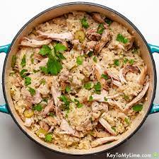

Honey Seasame Chicken and Rice

The classic chicken and rice is a staple to many diet and meal prep plans.
This version of chicken and rice provides a sweet tang with friendly macros.
Ingredients
- 1 cup of water
- 45 grams (1/4 cup) Jasmine Brown Rice
- 6 ounces Boneless, Skinless, Chicken Breast(cubed)
- 2.5 grams Fresh Garlic (diced)
- 5.25 grams Honey
- 3.75 grams Low Sodium Soy Sauce
- Pinch of black pepper
- Pinch of salt
- 3.75g Scallions(diced)
- 0.25 teaspoon Seasme Seeds
Directions
- Cook the rice: Bring the cup of water to a boil. Once the water is boiling, add the rice, cover with a lid, and turn the heat down to a low simmer. simmer
for 20 minutes then remove from heat. Keep covered for an additional 10 minutes
- While the rice is cooking, place the chicken in a large bowl. Season the chicken with garlic, honey, soy sauce, black pepper, and salt. Mix ingredients until
the chicken is evenly coated with all the seasoning.
- Heat a medium saute pan to a medium high heat. Once the pan is warm, add the seasoned chicken into the pan. Spread the chicken around into one even layer covering the bottom
of the pan. Cook for 3-4 minutes/until brown, then flip and do the same on the other side of the chicken.
- Plate the rice and chicken and sprinkle diced scallions and seaseme seed on top and enjoy!
Macros
Carbs: 40g
Protein: 56g
Fat: 3.1g
Calories: 374